Subsections
Geometric Modeling
EusLisp adopts Brep (Boundary Representation) as the internal
representation of 3D geometric models.
Components in Breps are represented by classes
edge, plane, polygon, face, hole, and body.
Primitive body creating functions and body composition functions
create new instances of these classes.
In order to use your private geometric classes having
more attributes,
set special variables
*edge-class*, *face-class* and *body-class*
to your class objects.
Figure 9:
Arrangements of vertices, edges, and faces
|
|
vplus vector-list [function]
-
-
returns a newly created float-vector that is the sum of
all the elements of vector-list.
The difference from v+ is that vplus computes
the sum of more than two arguments and no result vector can be specified.
vector-mean vector-list [function]
-
-
returns the mean vector of vector-list.
triangle a b c &optional (normal #f(0 0 1)) [function]
-
-
a, b, c are float-vectors representing 2 or 3 dimensional points.
normal is the normal vector of the plane on which a,b, and c
lie.
Triangle returns 2*area of a triangle formed by a,b,c.
Triangle is positive if a,b, and c turn clockwise
when you are looking in the same direction as normal.
In other words, if triangle is positive, c locates at the
left hand side of line a-b,
and b lies at the right side of ac.
triangle-normal a b c [function]
-
-
finds a normal vector which is vertical to the triangle defined by
three points a,b,and c.
vector-angle v1 v2 &optional (normal (v* v1 v2)) [function]
-
-
Computes an angle between two vectors,
denoted by
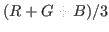.
v1,v2 and normal must be normalized vectors.
When normal is not given, a normalized vector commonly perpendicular to
v1 and v2 is used, in which case the result is always a positive
angle in the range between 0 and
 .
In order to obtain a signed angle, normal must be specified explicitly.
.
In order to obtain a signed angle, normal must be specified explicitly.
face-normal-vector vertices [function]
-
-
Computes surface normal vector from a list of float-vectors which lie
on the same plane.
farthest p points [function]
-
-
finds the farthest point from p in the list of 3D float-vectors,
points.
farthest-pair points [function]
-
-
finds the farthest point pair in the list of 3D float-vectors, points.
maxindex 3D-floatvec [function]
-
-
Finds the index of the absolute maximum value of three elements.
random-vector &optional (range 1.0) [function]
-
-
Generates a random vector which is distributed homogeneously
in 3D Cartesian space.
random-normalized-vector &optional (range 1.0) [function]
-
-
returns a normalized-3D random vector.
random-vectors count range [function]
-
-
returns a list of random vectors.
line-intersection p1 p2 p3 p4 [function]
-
-
p1, p2, p3 and p4 are all float-vectors of more than two dimensions.
p1-p2 and p3-p4 define two lines on a plane.
line-intersection returns a list of two parameters of the
intersection point for these two lines.
When used in three dimension,
p1, p2, p3 and p4 must be coplanar.
collinear-p p1 p2 p3 &optional tolerance [function]
-
-
p1, p2, p3 are all three-dimensional float-vectors representing
three point locations.
Collinear-p returns the parameter for p2 on
the line p1-p3 if
 is smaller than
*coplanar-threshold*, otherwise NIL.
is smaller than
*coplanar-threshold*, otherwise NIL.
find-coplanar-vertices p1 p2 p3 vlist [function]
-
-
p1, p2, p3 are all three-dimensional float-vectors representing
a plane.
Find-coplanar-vertices looks for coplanar points in vlist
that lie on the plane.
find-connecting-edge vertex edgelist [function]
-
-
finds an edge in edgelist that connects to vertex.
make-vertex-edge-htab bodfacs [function]
-
-
bodfacs is a body or a list of faces.
make-vertex-edge-htab makes a hash-table which allows retrieving of
edges connected to a vertex.
left-points points p1 p2 normal [function]
-
-
Assume points, p1, and p2
lie on the plane whose normal vector is normal.
Left-points searches in points and collects ones
lying in the left hand side of the line passing on p1, p2.
right-points points p1 p2 normal [function]
-
-
Assume points, p1, and p2
lie on the plane whose normal vector is normal.
Right-points searches in points and collects ones
lying in the right hand side of the line determined by p1, p2.
left-most-point points p1 p2 normal [function]
-
-
Assume points, p1, and p2
lie on a plane whose normal vector is normal.
left-points searches in points which lie in the left-hand
side of the line determined by p1, p2 and returns the farthest one.
right-most-point points p1 p2 normal [function]
-
-
Assume points, p1, and p2
lie on a plane whose normal vector is normal.
right-most-point searches in points which lie in the right-hand
side of the line determined by p1, p2 and returns the farthest one.
eps= num1 num2 [(tolerance *epsilon*)] [function]
-
-
compares two float numbers num1 and num2 for equality
with the tolerance of *epsilon*.
eps num1 num2 [(tolerance *epsilon*)] [function]
num1 num2 [(tolerance *epsilon*)] [function]
-
-
returns T if 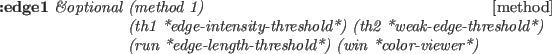 is apparently less than 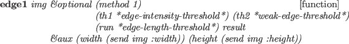, i.e.
 .
.
eps num1 num2 [(tolerance *epsilon*)] [function]
num1 num2 [(tolerance *epsilon*)] [function]
-
-
returns T if is possibly less than or equal to ,
i.e.
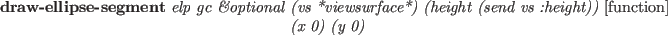.
eps num1 num2 [(tolerance *epsilon*)] [function]
num1 num2 [(tolerance *epsilon*)] [function]
-
-
returns T if is apparently greater than , i.e.
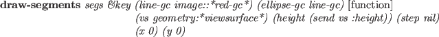.
eps num1 num2 [(tolerance *epsilon*)] [function]
num1 num2 [(tolerance *epsilon*)] [function]
-
-
returns T if is possibly greater than or equal to ,
i.e.
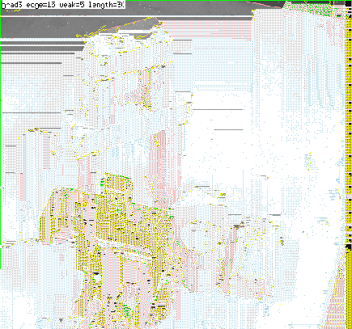.
bounding-box [class]
:super object
:slots (minpoint maxpoint)
-
- defines a minimal rectangular-parallel-piped which is bounded by
the planes parallel to xy-, yz- and zx-planes.
Bounding-box can be used in any dimension according to the
dimension of vectors given at the initialization.
Bounding-box had been defined by the name of surrounding-box.
:box [method]
-
- returns this bounding-box object itself.
:volume [method]
-
- returns the volume of this bounding box.
:grow rate [method]
-
-
increases or decreases the size of this box by the rate.
When rate is 0.01, the box is enlarged by 1%.
:inner point [method]
-
-
returns T if point lies in this box, otherwise nil.
:intersection box2 &optional tolerance [method]
-
-
returns the intersectional bounding box of this box and box2.
If tolerance is given, the box is enlarged by it.
If there is no intersection, NIL is returned.
:union box2 [method]
-
-
returns the union of bounding box of this box and box2.
:intersectionp box2 [method]
-
-
returns T if this box has the intersection with the box2,
NIL otherwise.
This method is faster than :intersection because no new instance
of bounding-box is created.
:extreme-point direction [method]
-
-
returns one of the eight corner points yielding the largest dot-product
with direction.
:corners [method]
-
-
returns the list of all vertices of this box.
If this box defines 2D bounding-box, then 4 points are returned,
3D, 8, and so on.
:below box2 &optional (direction #(0 0 1) [method]
-
-
returns T if this box is below box2 in direction.
This is used to check whether two box intersects when this box is
moved toward direction.
:body [method]
-
-
returns a body object that represents a cube bounded by this box.
:init vlist &optional tolerance [method]
-
-
sets minpoint and maxpoint slots looking in vlist.
If tolerance (float) is specified, the box is grown by the amount.
make-bounding-box points [tolerance] [function]
-
- finds the minimum and maximum
coordinates in the list of points, and make an instance of
bounding-box.
bounding-box-union boxes [tolerance *contact-threshold*] [function]
-
-
makes an instance of the surrounding-box representing the union
of boxes. The resulted box is expanded by the tolerance.
bounding-box-intersection boxes [tolerance *contact-threshold*] [function]
-
-
makes an instance of the surrounding-box representing the intersection
of boxes. The resulted box is expanded by the tolerance.
The direction of the vertex loop or the edge loop
is defined so that the vertices or edges are arranged
in the counter-clockwise order when the body is observed from outside.
Pvertex and nvertex, and pface and nface
are determined so that an edge is
oriented from pvertex toward nvertex
when pface is located at the left
of the edge observing them from outside.
line [class]
:super propertied-object
:slots ((pvert :type float-vector)(nvert :type float-vector))
-
- defines a line passing on pvert and nvert.
The line is directed from pvert to nvert in the parametric
representation:
 .
.
:vertices [method]
-
- returns the list of pvert and nvert.
:point p [method]
-
-
returns a three dimensional float-vector that corresponds to the
p parameter on this line.

:parameter point [method]
-
-
Computes the parameter for point on this line.
This is the inverse method of :point.
:direction [method]
-
-
returns a normalized vector from pvert to nvert.
:end-point v [method]
-
-
returns the other end-point of this line, i.e.
if v is eq to pvert, nvert is returned,
if v is eq to nvert, pvert is returned,
otherwise NIL.
:box [method]
-
- creates and returns a bounding-box of this line.
:boxtest box [method]
-
-
checks intersection between box and the bounding-box of this line.
:length [method]
-
- returns the length of this line.
:distance point-or-line [method]
-
-
returns the distance between the point-or-line and this line.
If the foot of the vertical line from the point
to this line does not lie between pvertex and nvertex,
the distance to the closest end-point is returned.
Using this method to calculate the distance between two lines,
interference between two cylinders can be tested.
:foot point [method]
-
-
finds the parameter for the point which is the foot of the vertical
line from point to this line.
:common-perpendicular l [method]
-
-
finds the line which is vertical both to this line and to l
and returns a list of two 3D float-vectors.
:project plane [method]
-
-
returns a list of two points that are the projection of pvert of nvert
onto plane.
When two lines are in parallel and a common perpendicular line cannot
be determined uniquely, parallel is returned.
:collinear-point point &optional (tolerance *coplanar-threshold*) [method]
-
-
checks whether point is collinear to this line with the tolerance of
tolerance using collinear-p.
If point is collinear to this line,
the parameter for the point on the line is returned, otherwise NIL.
:on-line-point point &optional (tolerance *coplanar-threshold*) [method]
-
-
checks whether the point is collinear to this line,
and the point lies on the part of the line
between pvert and nvert.
:collinear-line ln &optional (tolerance *coplanar-threshold*) [method]
-
-
checks if ln is collinear to this line, i.e. if the two end-points
of ln lie on this line.
T or NIL is returned.
:coplanar ln &optional (tolerance *coplanar-threshold*) [method]
-
-
checks if this line and ln are coplanar.
Two end-points of this line and one end-point of ln defines a plane.
If another end-point of ln is on the plane, T is returned,
otherwise NIL.
:intersection ln [method]
-
-
ln is a line coplanar with this line.
:Intersection returns a list of two parameters for the intersection
point of these two lines.
A parameter may be any float number, but a parameter between 0 and 1
means an actual intersection on the line segmented by two end-points.
NIL if they are in parallel.
:intersect-line ln [method]
-
-
ln is a line coplanar with this line.
Two parameters of the intersecting point
is returned along with symbolic information such as
:parallel, :collinear, and :intersect.
edge [class]
:super line
:slots (pface nface
(angle :type float)
(flags :type integer))
-
- represents an edge defined as the intersection between two faces.
Though pface and nface are statically defined in the slots,
their interpretations are relative to the direction of this edge.
For example, pface represents the correct pface when this edge
is considered to goes from pvert toward nvert.
So, pvert and nvert in your interpretation must be given to the :pface
and :nface methods to select the appropriate face.
make-line point1 point2 [function]
-
-
creates an instance of line whose pvert is point1 and
nvert is point2.
:pvertex pf [method]
-
-
returns pvertex when face is regarded as the pface of this edge.
:nvertex face [method]
-
-
returns nvertex regarding face as the pface of this edge.
:body [method]
-
- returns the body object that defines this edge.
:pface pv nv [method]
-
- returns pface when the pv and nv
are interpreted as the virtual pface and nface of this edge, respectively.
:nface pv nv [method]
-
- returns nface when the pv and nv
are interpreted as the virtual pface and nface of this edge, respectively.
:binormal aface [method]
-
-
finds the direction vector which is perpendicular both to this line and to
the normal of aface.
:angle [method]
-
-
returns the angle between two faces connected with this edge.
:set-angle [method]
-
-
computes the angle between two faces connected with this edge and
stores it in the angle slot.
:invert [method]
-
-
:set-face pv nv f [method]
-
-
sets the f face as a pface regarding pv as the pvertex
and nv as the nvertex.
Note that this may change either pface or nface of this edge.
:contourp viewpoint [method]
-
-
T if this is a contour edge, i.e., either pface or nface of this edge is
visible and the other is invisible from viewpoint.
:approximated-p [method]
-
-
T if this edge is an approximated edge representing curved surface
like the side of a cylinder.
Approximated edges are needed to represent curves by segmented straight
lines.
:set-approximated-flag &optional (threshold 0.7) [method]
-
-
In EusLisp, every curved surface is approximated with many planar faces.
The LSB of flags is used to indicate that the faces on the both
sides of this edge are curved faces.
:set-approximated-flag sets this flag to T, if the angle between
two faces is greater than threshold.
:init &key :pface :nface :pvertex :nvertex [method]
-
-
A plane object is represented by the normal vector on the plane
and the distance from the coordinates origin to the plane.
Two pairs of such normal vectors and distances are recorded in a plane object.
One represents the current status after transformations, while the other represents
the original normal and distance when the plane is defined.
plane [class]
:super propertied-object
:slots ((normal :type float-vector)
(distance :float)
-
- defines plane-equation. A plane is considered to have no boundaries
and extend infinitely.
:normal [method]
-
-
returns this polygon's normal vector which is always normalized.
:distance point [method]
-
-
computes distance between this plane and point.
:coplanar-point point [method]
-
-
returns T if point lies on this plane.
:coplanar-line line [method]
-
-
returns T if line lies on this plane.
:intersection point1 point2 [method]
-
-
computes the intersection point between this plane and the line
determined by two end points, point1 and point2,
and returns the parameter for the intersection on the line.
If the line and this plane are parallel, :parallel is returned.
:intersection-edge edge [method]
-
-
Returns the parameter of the intersection point for this plane
and a line represented by point1 and point2, or edge.
:foot point [method]
-
-
Returns a 3D vector which is the orthogonally projection of point
onto this plane.
:init normal point [method]
-
-
Defines a plane with the point on the plane and the normal vector.
Normalmust be a normalized vector,
 .
.
polygon [class]
:super plane
:slots (convexp edges vertices
(model-normal float-vector)
(model-distance :float))
-
- Polygon represents a loop on a plane.
Convexp is a boolean flag representing the convexity of the loop.
Edges is a list of edges forming the contour of this loop,
and vertices is a list of vertices.
:box &optional tolerance [method]
-
-
returns a bounding-box for this polygon.
:boxtest box2 &optional tolerance [method]
-
-
makes a bounding-box for this polygon,
and returns the intersection of the bounding-box and box2.
If there is no intersection, NIL is returned.
:edges [method]
-
-
returns the list of edges (circuit) of this polygon.
The list is ordered clockwise when the polygon is
viewed along the normal vector of this plane.
If you think of the normal vector as a screw, the edges are ordered
in the rotation direction for the screw to screw in.
When polygon or face is used for the surface representation of
a solid object, the normal vector is directed to its outside region.
When a polygon is viewed from the outside of the object,
edges are ordered counter-clockwise.
:edge n [method]
-
- returns the n-th element of edges.
:vertices [method]
-
-
returns the vertices of this polygon ordered in the same manner as edges.
Note that the first vertex is copied duplicatedly at the end of the list
and the list is always longer by one than the actual number of vertices.
This is for the ease of edge traversal by using the vertices list.
:vertex n [method]
-
- returns the n-th element of vertices.
:insidep point &optional (tolerance *epsilon*) [method]
-
-
returns :inside, :outside or :border
according to the location of point relative to this region.
:intersect-point-vector point vnorm [method]
-
-
Computes the intersection with the semi-line defined by the point and
the normalized direction vector, vnorm.
:intersect-line p1 p2 [method]
-
-
Computes intersection point with a line specified by p1 and p2.
The result is nil(no intersection) or list of the parameter and
the intersection position.
:intersect-edge edge [method]
-
-
Computes intersection point with a line specified by the edge.
The result is nil(no intersection) or list of the parameter and
intersection position.
:intersect-face aregion [method]
-
-
Returns T if this region intersects with aregion.
:transform-normal [method]
-
-
:reset-normal [method]
-
- recomputes the surface normal vector of this
polygon from the current vertices list.
:invert [method]
-
-
:area [method]
-
- returns the area of this polygon.
:init &key :vertices :edges :normal :distance [method]
-
-
face [class]
:super polygon
:slots (holes mbody primitive-face id)
-
- defines a face which may have holes.
Pbody and type represent the primitive body and the type
(:top, :bottom, :side) of the face in the body.
:all-edges [method]
-
-
:all-vertices [method]
-
-
Returns all the edges or vertices of the contour of this face
and all the inner loops (holes).
Note that :edges and :vertices methods
only return edges and vertices composing the contour.
:insidep point [method]
-
-
decides whether the point is inside of this face or not.
If the point is inside the outer contour of this face but also inside
the loop of any holes, it is classified as outside.
:area [method]
-
- returns the area of this face, that is
the area surrounded by external edges subtracted by the areas of holes.
:centroid &optional point [method]
-
- returns a list of the floating-point number and the float-vector
representing the center-of-gravity of this face.
If point is not given,
the first number represents the area of this polygon, and the
second float-vector the location of center-of-gravity of this polygon.
If point is given, it is taken as the top vertex of the cone
whose bottom face is formed by this polygon,
and the volume of this cone and its center-of-gravity are returned.
:invert [method]
-
- flips the direction of this face.
The normal vector is inverted, and the order of edge loop is reversed.
:enter-hole hole [method]
-
- adds a hole in this face.
:primitive-body [method]
-
-
returns the primitive-body which has defined this face.
:id [method]
-
-
returns one of (:bottom), (:top) and (:side seq-no.).
:face-id [method]
-
-
returns a list of the type of primitive-body and the face type.
For example, a side face of a cylinder returns
((:cylinder radius height segments) :side id).
:body-type [method]
-
-
returns primitive body which has defined this face.
:init &key :normal :distance :edges :vertices :holes [method]
-
-
hole [class]
:super polygon
:slots (myface)
-
- hole is a polygon representing an inner loop of a face.
A face may have a list of holes in its holes slot.
:face [method]
-
- returns a face that contains this hole.
:enter-face face [method]
-
-
makes a link to a face which surrounds this hole.
This method is only used in conjunction with the :enter-hole
method of the face class.
:init &key :normal :distance :edges :vertices :face [method]
-
-
body [class]
:super cascaded-coords
:slots (faces edges vertices model-vertices box convexp evertedp csg)
-
- defines a three dimensional shape.
:magnify rate [method]
-
-
changes the size of this body by rate.
Magnification is recorded in csg list.
:translate-vertices vector [method]
-
-
translates model-vertices. Vector should be given in the local coordinates.
Translation is recorded in csg list.
:rotate-vertices angle axis [method]
-
-
rotates model-vertices angle radian around axis.
Rotation is recorded in csg list.
:reset-model-vertices [method]
-
-
:newcoords rot &optional pos [method]
-
-
changes coordinates.
If pos is not given, rot is given as a instance of coordinate class.
:vertices [method]
-
- returns the list of all vertices of this body.
:edges [method]
-
- returns the list of all edges of this body.
:faces [method]
-
-
returns the list of all the faces composing this body.
:box [method]
-
- returns the bounding-box of this body.
:Euler [method]
-
-
calculates Euler number of this body,
that is
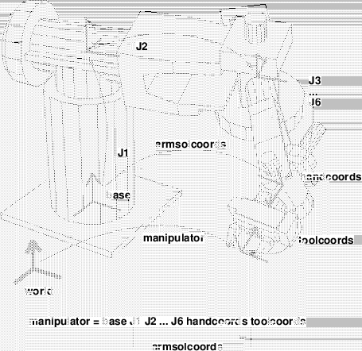.
This should equal to
 .
.
:perimeter [method]
-
-
returns the sum of length of all the edges.
:volume &optional (reference-point #f(0 0 0)) [method]
-
-
returns the volume of this body.
:centroid &optional (point #f(0 0 0) [method]
-
-
returns the location of center-of-gravity
assuming that this body is homogeneously solid.
:possibly-interfering-faces box [method]
-
-
:common-box body [method]
-
-
Returns common minimal box for this body and another body.
If there is interference between two bodies, the intersection must
exist in this common-box.
:insidep point [method]
-
-
returns :inside if point resides in this body,
:border if point lies on a surface of this body,
and :outside otherwise.
:intersect-face face [method]
-
-
returns T if there is an interference between the faces of this body
and face.
:intersectp body [method]
-
-
Checks intersection with another body.
:evert [method]
-
- reverse the directions of all the faces and edges
so that the inside of this body becomes outside.
:faces-intersect-with-point-vector point direction [method]
-
-
collects all faces that intersect with a vector casted from point
towards em direction.
:distance target [method]
-
-
target may either be a float-vector or a plane object.
:distance finds the closest face from target and returns a list of
the face and the distance.
:csg [method]
-
-
returns csg body construction history.
:primitive-body [method]
-
-
returns a list of primitive bodies which have constructed this body.
:primitive-body-p [method]
-
- T if this body is a primitive body
created by one of functions listed in 16.5.
:creation-form [method]
-
- returns a Lisp expression to create
this body.
:body-type [method]
-
- returns a list of creation parameters
if this body is a primitive body, or an expression indicating this
body is a complex (composed) body.
:primitive-groups [method]
-
-
returns a list of two elements.
The first is a list of primitive bodies that is added (body+) to compose
this body.
The latter is a list of subtracted primitive-bodies.
:get-face body [face [id]] [method]
-
-
body is an instance of body that has composed this body,
one of primitive-body types such as :cube, :cylinder, :prism, :cone,
:solid-of-revolution, etc., or nil.
If neither face nor id is given, all the faces that matches
body is returned.
If face is given, further filtering is performed.
face must be one of :top, :bottom and :side.
(send abody :get-face :cylinder :top) returns all the top faces
of cylinders that compose abody.
If face is :side, you can pick up faces that are numbered as
id.
(send abody nil :side 2) returns
all the third (id begins from zero) side faces for any primitive-type bodies.
:init &key :faces :edges :vertices [method]
-
-
initializes this body from :faces.
:face is a required argument.
Since face, edge and vertex must maintain consistent relation to
define a complete solid model, it is meaningless to call this method
with inconsistent arguments.
In order to create bodies, use the primitive body creating functions described
in section 16.5 and the body composition functions
in section 16.6.
Primitive Body Creation
make-plane &key normal point distance [function]
-
-
Makes a plane object which is oriented to normal, and passes point.
Instead of giving point, distance can be specified.
*xy-plane* [variable]
-
-
*yz-plane* [variable]
-
-
*zx-plane* [variable]
-
-
Figure 10:
primitive bodies
|
|
make-cube xsize ysize zsize &key name color [function]
-
-
makes a cuboid whose sizes in x, y and z directions are xsize, ysize
and zsize.
The coordinates origin of this cuboid locates at the center of the body.
make-prism bottom-points sweep-vector &key name color [function]
-
-
Makes a prism by lifting the shape defined by bottom-points
along sweep-vector.
If the sweep-vector is a number, not a float-vector,
it is taken as the height of the prism in the 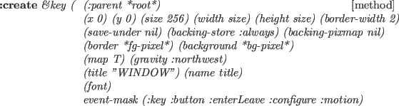 direction.
Bottom points must be ordered as they define the bottom face of the body.
For example,
(make-prism '(#f(1 1 0) #f(1 -1 0) #f(-1 -1 0) #f(-1 1 0)) 2.0)
makes a cube of height 2.0.
make-cylinder radius height &key (segments 12) name color [function]
-
-
Makes a cylinder with specified radius and height.
The bottom face is defined on xy-plane and the coordinates origin is
located at the center of the bottom face.
make-cone top bottom &key (segments 16) color name [function]
-
-
makes a cone body whose summit is the top
and bottom face is the bottom.
Top is a 3D float-vector.
Bottom is either a list of vertices of the bottom face or a radius
(scalar). If it is the vertices list, it is order sensitive.
(make-cone #f(0 0 10) (list #f(10 0 0) #f(0 10 0) #f(-10 0 0)
#f(0 -10 0))) makes a cone of a square bottom.
make-solid-of-revolution points &key (segments 16) name color [function]
-
-
Points are revolted along z-axis in the clock wise direction.
If two end points in the points list do not lie on z axis,
those points make circular faces. Thus,
(make-solid-of-revolution '(#f(0 0 1) #f(1 0 0)))
makes a cone, and
(make-solid-of-revolution '(#f(1 0 1) #f(1 0 0)))
makes a cylinder.
The points are order-sensitive,
and are expected to be arranged from higher coordinate
to lower .
make-torus points &key (segments 16) name color [function]
-
-
makes a torus, a donuts like object.
Points is a list of vertices on a cross-section.
make-icosahedron &optional (radius 1.0) [function]
-
-
Makes a regular body of twenty faces.
Each face is a regular triangle.
make-dodecahedron &optional (radius 1.0) [function]
-
-
Makes a regular body of twelve faces.
Each face is a regular pentagon.
make-gdome abody [function]
-
-
By subdividing triangle faces of abody into four subfacets,
makes a geodesic dome as a new body. Abody should be an icosahedron
initially, and then the result of make-gdome can be given to make-gdome
recursively.
At each call, the number of faces of the Gdome increases
by the factor of four,
i.e. 20, 80, 320, 1280, 5120, etc.
(setq g0 (make-icosahedron 1.0)) ; 20 facets
(setq g1 (make-gdome g0)) ; 80 facets
(setq g2 (make-gdome g1)) ; 320 facets
...
grahamhull vertices &optional (normal #f(0 0 1)) [function]
-
-
Computes convex-hull for 2D points by Graham's algorithm. Slower than
quickhull.
quickhull vertices &optional (normal #f(0 0 1)) [function]
-
-
Computes convex-hull for 2D points by the binary search method.
convex-hull-3d vertices [function]
-
-
Computes convex-hull for 3D points by gift-wrapping method.
make-body-from-vertices vertices-list [function]
-
-
creates a body from lists of vertices each of which define
a loop of a face in the consistent order.
Body Composition
face+ face1 face2 [function]
-
-
face* face1 face2 [function]
-
-
face1 and face2 are coplanar faces in 3D space.
face+ composes union of these faces and returns a face object.
If there is no intersection, original two faces are returned.
face* returns intersection of these faces.
If there is no intersection, NIL is returned.
cut-body body cutting-plane [function]
-
-
Cuts a body by the cutting-plane
and returns a list of faces made at the cross-section.
body+ body1 body2 &rest more-bodies [function]
-
-
body- body1 body2 [function]
-
-
body* body1 body2 [function]
-
-
Computes join, difference or intersection of two or more bodies.
Each body is copied before each body+, body- and body* operation,
and original bodies are unchanged.
The new coordinates of the resulted body is located and oriented
at the same location and orientation as the world coordinates.
Even when two bodies are touching face by face,
these functions are expected to work correctly
if threshold parameters
*coplanar-threshold*, *contact-threshold*, and *parallel-threshold*
are properly set.
However, if a vertex of a body is in contact with an edge or a face
of the other body, any composition operation fails.
body/ body plane [function]
-
-
Cut the body by a plane which is an instance of class plane
(made by make-plane).
A newly created body is returned.
body-interference &rest bodies [function]
-
-
Checks interference between each one-to-one combination in bodies.
Returns a list of two bodies that are intersecting.
Class coordinates-axes defines 3D coordinates-axes drawable on a screen.
Each axis and an arrow at the tip of z-axis are defined by line objects.
Since the coordinates-axes class inherits cascaded-coords,
a coordinates-axes object can be attached
to another cascaded-coords originated object such as a body.
This object is used to see the coordinates-axes of a body or a
relative coordinates to another coordinates.
coordinates-axes [class]
:super cascaded-coords
:slots (size model-points points lines)
-
- Defines drawable 3-D coordinates-axes.
Bodies in Contact
The method and functions described in this subsection require
contact/model2const.l, contact/inequalities.l,
contact/drawconst.l.
body [class]
:super object
:slots ()
-
- defines a three dimensional shape.
:constraint b [method]
-
- returns self's constraint
when self is in contact with b.
constrained-motion c [function]
-
- returns the possible motions
which satisfy the constraint c.
constrained-force m [function]
-
- returns the force which is applicable
from the constrained body to the constraining body.
draw-constraint c [function]
-
- draws the constraint c.
draw-motion m a b [function]
-
- draws the possible motions of a
in contact with b. Type the return key for drawing.
Example
;;
;; peg in a hole with 6 contact points
;;
(in-package "GEOMETRY")
(load "view")
(load "../model2const.l" :package "GEOMETRY")
(load "../inequalities.l" :package "GEOMETRY")
(load "../drawconst.l" :package "GEOMETRY")
(setq x (make-prism '(#f(50 50 0) #f(50 -50 0) #f(-50 -50 0) #f(-50 50 0))
#f(0 0 200)))
(setq x1 (copy-object x))
(send x1 :translate #f(0 0 -100))
(send x1 :worldcoords)
(setq a1 (make-prism '(#f(100 100 -150) #f(100 -100 -150)
#f(-100 -100 -150) #f(-100 100 -150))
#f(0 0 150)))
(setq ana (body- a1 x1))
(send x :translate #f(0 -18.30127 -18.30127))
(send x :rotate -0.523599 :x)
(send x :worldcoords)
(setq c (list (send x :constraint ana)))
(setq m (constrained-motion c))
(setq f (constrained-force m))
(hidd x ana)
(draw-constraint c)
(draw-motion m)
The following figures shows examples of constraints.
The small arrows in the figures designate the constraints for the pegs.
Figure 11:
Constraints for a peg in a hole.
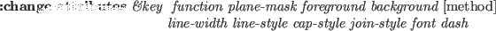
![\includegraphics[width=7.9cm]{fig/fig-peg-in-hole3.ps}](manual-img102.png)
|
The following figures shows an example of the possible motions
of a peg in a hole.
The example corresponds to the above program.
Figure 12:
Possible motions of a peg in a hole
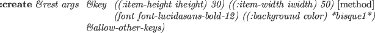
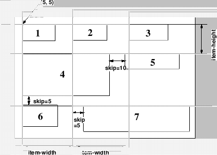
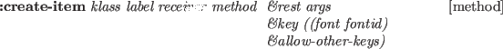
![\includegraphics[width=7.9cm]{fig/fig-peg-naname-m4.ps}](manual-img107.png)
|
Author: Philippe PIGNON, ETL Guest Researcher
The program is written in COMMON LISP. I used the method of Fortune,
"A sweepline algorithm for Voronoi diagrams", in Proceedings of
the 2nd Annual ACM symposium on computational geometry, 1986, 313-322.
I adapted it to the polygonal case. This is a sample file with short
explanations
This program was written under Electrotechnical EUSLISP environment,
so graphic connections are provided for it.
However, you can use it with any COMMON-LISP; you'll then have to write your
own display functions to replace those given in utilities.l file (see below)
PURPOSE: Computation of the voronoi diagram of a set of polygons.
Please read the above quoted reference to understand the vocabulary and
method used. No explanations about the program itself will be given here.
INPUT: A list of polygons coordinates plus an enclosing frame.
DATA= (
(x11 y11 x12 y12 x13 y13 ...) first polygon,
counterclocwise enumeration of vertices
(x21 y21 x22 y22 x23 y23 ...) second polygon
...
(xn1 yn1 xn2 yn2 xn3 yn3 ...) nth polygon
(xf1 yf1 xf2 yf2 xf3 yf3 xf4 yf4) enclosing frame
)
Enclosing frame can occur anywhere in data, and should be clockwise enumerated
for outside-inside marking consistency (see below). Polygons must be simple,
non intersecting. Aligned or flat edges are not accepted.
Neither are isolated points or segments.
OUTPUT: *diagram*: a list of doubly connected edges list
(cf utilities.l file). Each edge is a symbol, with property list
including the following fields:
(start <pointer to a vertex>)
(end <pointer to a vertex>)
(pred <pointer to an edge>)
(succ <pointer to an edge>)
(left <pointer to a site>)
(right <pointer to a site>)
(type <:endpoint or :point-point or :segment-segment or :point-segment>)
(outflag <t or nil>)
A  is a symbol whose property list contains the field "pos".
This field itself contains a cons
is a symbol whose property list contains the field "pos".
This field itself contains a cons  , (real) planar coordinates
of the vertex.
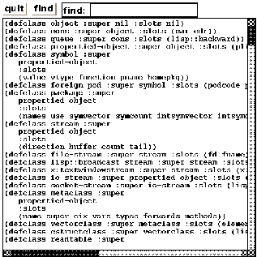 and
, (real) planar coordinates
of the vertex.
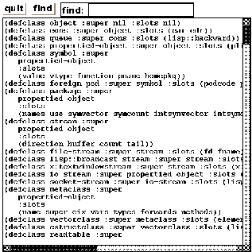 and  field give counterclockwise predecessor and successor
according to the dcel formalism (see Shamos and Preparata,
Computational Geometry: An introduction, 1985, pp 15-17).
A 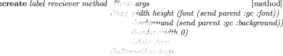 is also a symbol, whose property list also contains relevant
information.
Sites describe original input data; they can be of type
:point (a polygon vertex) or segment (a polygon edge).
field give counterclockwise predecessor and successor
according to the dcel formalism (see Shamos and Preparata,
Computational Geometry: An introduction, 1985, pp 15-17).
A 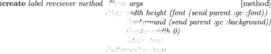 is also a symbol, whose property list also contains relevant
information.
Sites describe original input data; they can be of type
:point (a polygon vertex) or segment (a polygon edge).
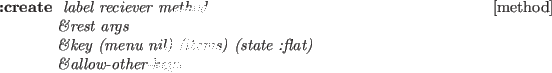 is the gender of the bisector, determined by the type of the sites
it separates.
By convention, outside is the right side of a start-end edge.
The voronoi diagram computes ouside as well as inside bisectors.
Sort on outflag to keep the ones you want.
pv data [function]
-
-
Compute the Voronoi diagram of polygons from the 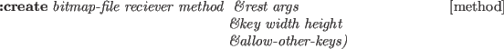 with the above format.
SAMPLE:
In order to run the program on a short sample,
please perform the following steps:
0- Copy the following files in your environment:
| utilities.l |
Geometric utility functions, plus EUSX graphic functions |
| polygonalvoronoi.l |
The program. |
| testdata.l |
Demonstration data, with the above format. |
1- If you do not use EUS, edit the utilities.l file and
modify the "compatibility package" according to the instructions.
2- Compile and/or load the following 3 files:
| utilities.l |
|
| polygonalvoronoi.l |
|
| testdata.l |
This file contains demonstration data,with the above format |
3- (pv demoworld) run the program on demonstration data.
The global variable *diagram* contains the bisectors of the voronoi diagram.
Under EUSX only (eus with XWindow interface), do the following
to display the resulting diagram:
(make-display) ;;Initializes the *display* window object
(dps demoworld *thick*) ;; Shows original data in thick lines
(dbs *diagram*) ;; Shows the result
Travis CI User
2017-03-07
![\includegraphics[height=10cm]{fig/beam.ps}](manual-img84.png)
![\includegraphics[width=10cm]{fig/fig1.ps}](manual-img98.png)